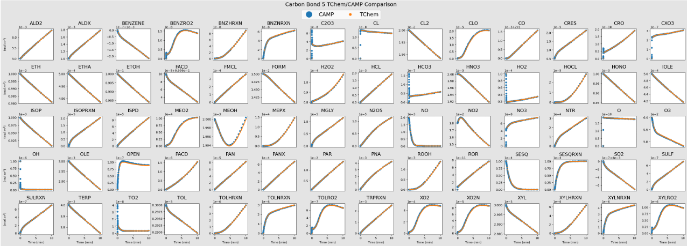

Carbon Bond 05 Chemical System
We adapted the Carbon Bond 05 reaction mechanism from the CAMP chemistry code.
Mechanism details:
- Number of Species: 67
- Number of Reactions: 187
- Arrhenius type reactions: 168
- CMAQ_H2O2 type reactions : 3
- Troe type reactions: 16
- Sources e.g., EMISSION: 14
This mechanism, used for testing the CAMP solver, contains 26 photolysis reactions, which we replace with Arrhenius-type reactions that have energy = 0 and temperature coefficient = 1.
Scripts to run and plot the outputs of this example are at: src/examples/runs/atmospheric_chemistry/CB05CL_AE5. The bash script to run this mechanism is shown below:
exec=$TCHEM_INSTALL_PATH/examples/TChem_AtmosphericChemistry.x
run_this="$exec --chemfile=config_full_gas.yaml \
--outputfile=full_gas.dat \
--time-iterations-per-interval=10 \
--tol-time=1e-10 \
--dtmin=1e-20 \
--dtmax=10 \
--tend=600\
--atol-newton=1e-18 \
--rtol-newton=1e-8 \
--max-newton-iterations=20 \
--max-time-iterations=20000"
echo $run_this
eval $run_this
Here, the TChem_AtmosphericChemistry.x executable is a box model that integrates (in time) a list of species using the mechanism file from the input "chemfile", which in this case is config_full_gas.yaml.
The system is a box model or zero-dimensional system that only considers chemical reactions.
The executable saves the time profiles for the species in outputfile=full_gas.dat.
In the example directory, the Jupyter-notebook PlotFullGas plots the time profiles of each species from the TChem-atm simulation and compares to CAMP's outputs.
Note that the CAMP output was previously computed and is saved in the TChem-atm repository.
When running the TChem_AtmosphericChemistry.x executable, the user may change time integration parameters of the TrBDF2 solver.
First, the Newton solver parameters are the absolute (atol-newton) and relative tolerance (rtol-newton) and the maximum number of iterations (max-newton-iterations).
Second, the time step size is controlled using the tol-time parameter and the maximum (dtmax) and minimum (dtmin) time step values.
Third, one of the parameters tend or max-time-iterations will determine end the simulation.
Finally, one can find additional help information from the TChem_AtmosphericChemistry.x executable using TChem_AtmosphericChemistry.x --help.
 Comparing TChem-atm and CAMP outputs for the Carbon Bond 05 mechanism.